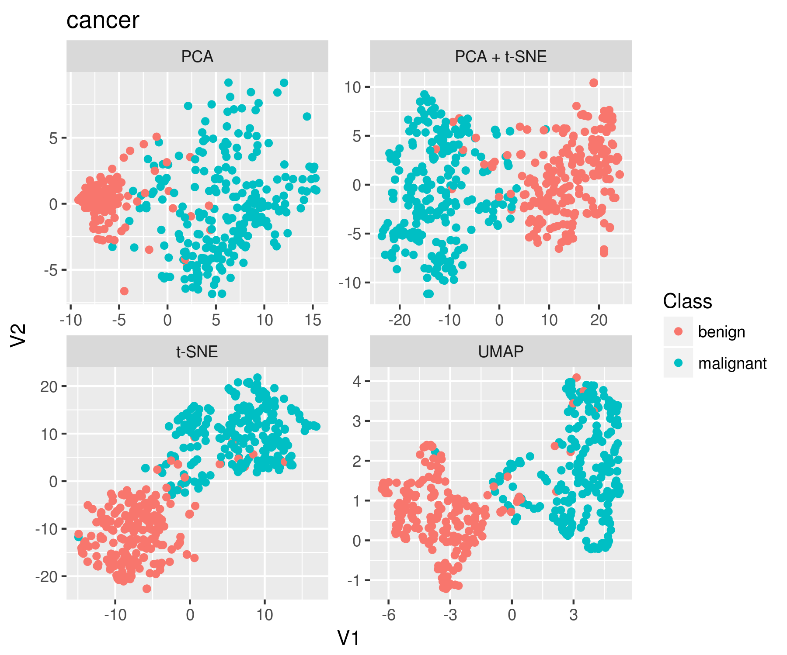

Motivation
A few weeks ago, as part of the rOpenSci Unconference, a group of us (Sean Hughes, Malisa Smith, Angela Li, Ju Kim and me) decided to work on making the UMAP algorithm accessible within R. UMAP (Uniform Manifold Approximation and Projection) is a dimensionality reduction technique that allows the user to reduce high dimensional data (multiple columns) into a smaller number of columns for visualization purposes (Usually two). It is related to both Priniciple Components Analysis (PCA) and t-SNE, which are techniques often used in the single-cell omics world to visualize high dimensional data.
We decided to start working on the umapr package to make this technique accessible within R. As with most rOpenSci Unconf projects, this started with an issue entry in the rOpenSci unconf repo from Sean:
I recently read about a new non-linear dimensionality reduction algorithm called UMAP, which is much faster than t-SNE, while producing two-dimensional visualizations that share many characteristics with t-SNE. I initially found out about it in the context of use on high-dimensional single-cell data in this paper.
….
My thought is that the ideal would be a package focused on UMAP specifically, implemented in R or Rcpp. Unfortunately I am not at all an expert in this topic or familiar with the mathematics involved, so the best I would be able to do is try to translate the Python implementation into R.
We all met at the unconference the first day and decided that this was a project worth working on. Since TSNE is so used in the single cell and flow-cytometry community, we thought that having an alternative that was just as good, but faster to run would be helpful.
Making a Development Plan
Rather than recreate the UMAP code completely from scratch in R, we decided to use the reticulate package to call the implementation in Python from R. It is tempting to just wrap the function’s arguments with ... and let the user refer to the python documentation. However, we didn’t really think that was in the spirit of the unconf. We wanted to make UMAP much more accessible.
In the future, we plan to implement the UMAP algorithm in C++ in order to make it accessible to more languages.
Learning about Package Building, Testing, and Documentation
Although our package only really has one main function, we felt it was important to have good documentation and unit tests. We spent some time learning about roxygen for function documentation and testthat for unit testing, and setting up our package with Travis-CI for continuous integration testing. This included unit tests on each argument and including examples varying the essential parameters.
We used a lot of time learning more about the specifics of package building and vignette building in R. We were definitely excited by all of the available tools and built a vignette profiling the performance of the UMAP algorithm versus other dimensionality reduction techniques, such as TSNE.
Profiling umapr using different datasets
Part of the appeal of UMAP is that it is faster than tSNE. So we profiled the performance of UMAP on a number of different datasets: iris (of course!),
Exploring the Results with Shiny
We built a small Shiny app that lets people explore their embedding vectors (the reduced vectors) and how they separate the data into different populations. The app is simple, but allows users to immediate assess the results of the UMAP algorithm in differentiating the different populations in the data.
Final Results: Get umapr
umapr is in the ropenscilabs organization, and can be installed with the following commands, after the python modules are installed.
install.packages("devtools")
devtools::install_github("ropenscilabs/umapr")As a group, we learned a lot by building the umapr package, including specifics of package building, documentation using roxygen, and building unit tests using testthat and automating testing using Appveyor and Travis-CI.
Citation
BibTeX citation:
@online{laderas2018,
author = {Ted Laderas},
title = {Working on the `Umapr` Package},
date = {2018-06-15},
url = {https://laderast.github.io//posts/2018-06-15-working-on-the-umapr-package},
langid = {en}
}
For attribution, please cite this work as:
Ted Laderas. 2018. “Working on the `Umapr` Package.” June
15, 2018. https://laderast.github.io//posts/2018-06-15-working-on-the-umapr-package.